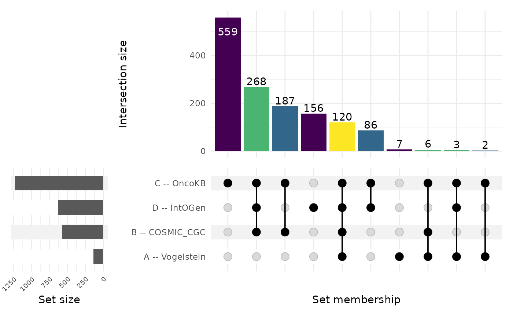
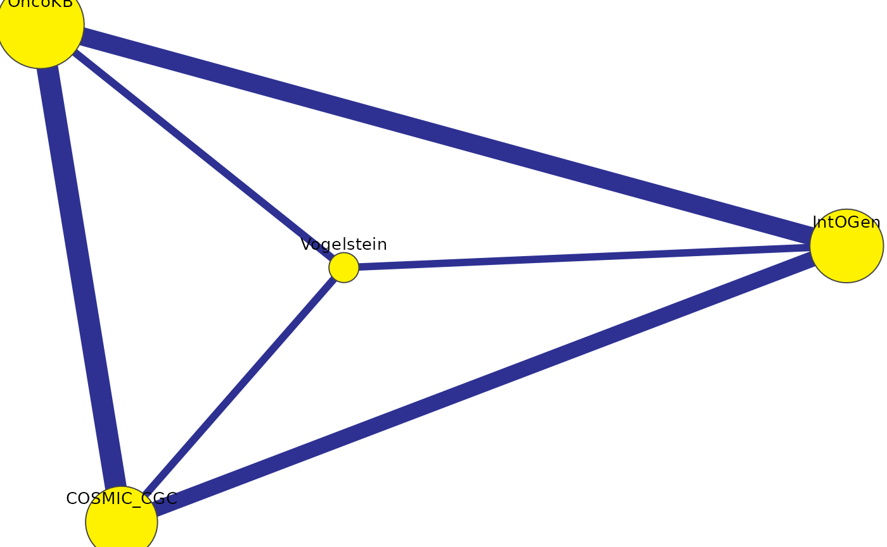

Choosing UpSet vs Venn vs Network
Source:vignettes/v04_upset_vs_venn_vs_network.Rmd
v04_upset_vs_venn_vs_network.RmdChoosing UpSet vs Venn vs Network
vennDiagramLab ships three complementary visualizations
of the same underlying region structure. This vignette explains when to
use which.
library(vennDiagramLab)
result <- analyze(load_sample("dataset_real_cancer_drivers_4"))
length(result@dataset@set_names)
#> [1] 4Quick guidance
| # of sets | Recommended primary view | Why |
|---|---|---|
| 2 | Venn | obvious, area-proportional possible |
| 3 | Venn | classic three-circle layout reads instantly |
| 4 | Venn (Edwards) | still readable as a Venn |
| 5–6 | UpSet | Venn becomes hard to read; UpSet bars are clearer |
| 7+ | UpSet (primary) + Network (relationships) | Venn is essentially unusable |
For high set counts (5+), the Network view adds something neither representation provides: it shows the pairwise relationships as a graph, where edge weight is intersection size or significance.
Venn
svg <- render_venn_svg(result, title = "4-set Venn (cancer drivers)")
nchar(svg)
#> [1] 6473The SVG is plain text — embed it in a notebook with
htmltools::HTML(svg) or save to disk and reference from
Markdown.
UpSet
render_upset(result, sort_by = "size", color_mode = "depth")
(The chunk above is gated on R >= 4.6 because the
CRAN release of ComplexUpset (1.3.3) is incompatible with
ggplot2 >= 4.0 on older R.)
Network
render_network(result, edge_metric = "intersection")
Each node is a set, sized by inclusive cardinality. Each edge is a
pair, weighted by the chosen edge_metric
("intersection", "jaccard",
"fold_enrichment", or "overlap_coefficient").
Edges below the significance threshold are colored differently.
When the three views disagree
Sometimes a region looks “small” on a Venn but lights up bright on a Network because the fold-enrichment is high relative to expectation. That’s not a contradiction — Venn shows raw counts, Network can show normalized strength. Use both.
What’s next
-
vignette("v05_statistics_deep_dive")— what the network’s significance threshold actually means. -
vignette("v07_pdf_reports")— generate a single PDF that includes all three views.